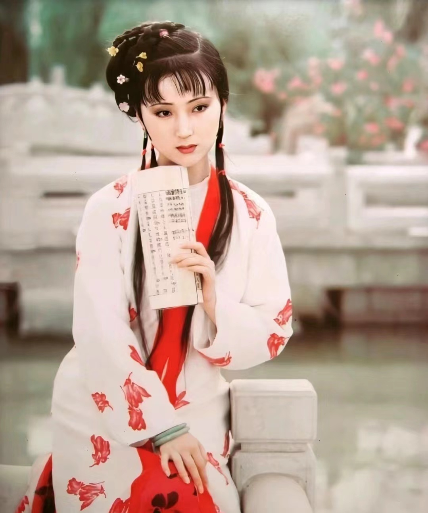

Cao Xueqin, with the courtesy name Mengruan and the pen name Xueqin, was a novelist in the late Qing Dynasty. He was born into a family of officials and scholars, and was well-read from a young age. In addition, he experienced the luxurious and refined lifestyle of wealthy families in the late Qing Dynasty. Later, his family fell on hard times and Cao Xueqin was forced to wander. After experiencing many twists and turns, he saw the essence of China's feudal society. He used artistic techniques to describe the tragic love story of a pair of devoted lovers, as well as the daily life of feudal aristocrats to reflect the inevitable decline of feudal society. Cao Xueqin is the author of the Chinese classic novel "Dream of the Red Chamber".
">| Name | Verdict | Personality | Appearance |
|---|---|---|---|
| Jia Baoyu | Seeking sorrow and hatred for no reason, sometimes he seems as stupid as crazy; even though he was born with a good skin, his belly turns out to be rough. If you are poor and unable to handle common affairs, you are stupid and afraid of reading articles; if your behavior is eccentric and eccentric, you will not care about the slander of the world! Rich people do not know how to enjoy their careers, poverty is intolerable and desolate; it is a pity that they have failed to live up to their good time, and they have no hope for the country or their family. The most incompetent person in the world, unparalleled in both ancient and modern times. I would like to send a message to the dandy and the rich: Don not imitate this person! | Jia Baoyu is pure, kind and compassionate, but he is also capricious, weak-willed and irresponsible. | |
| Lin Daiyu | Oh, the lament of the stillness, pity the talent of singing about the fluffy snow; Jade belt hanging in the forest, golden hairpin buried in the snow. | Lin Daiyu is talented, careful and sincere, but she is also sentimental and aloof |  |
| Xue Baochai | Oh, the lament of the stillness, pity the talent of singing about the fluffy snow;What a commendable moral character this woman has! Jade belt hanging in the forest, golden hairpin buried in the snow. | Xue Baochai is steady,generous and caring,but she is worldly and smooth-tongued. |